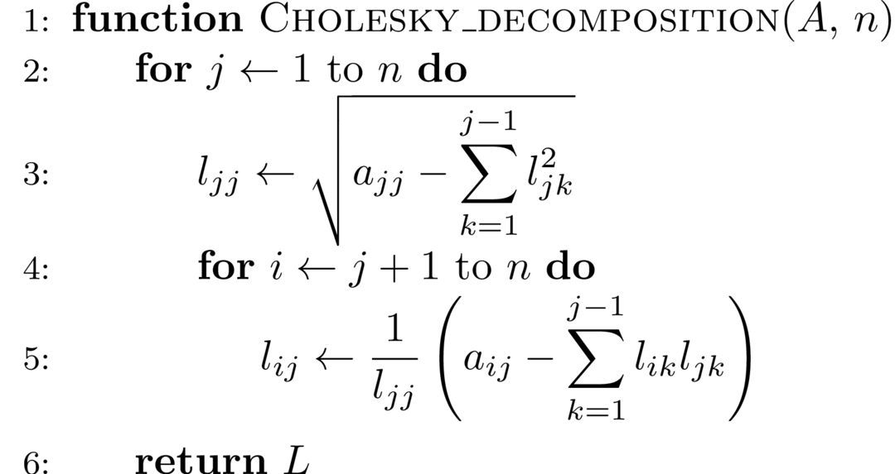

\[ \newcommand{\norm}[1]{\left\lVert#1\right\rVert} \newcommand{\b}{\boldsymbol} \newcommand{\bx}{\b{x}} \newcommand{\by}{\b{y}} \newcommand{\bb}{\b{b}} \newcommand{\bf}{\b{f}} \newcommand{\bg}{\b{g}} \newcommand{\w}{\widetilde} \newcommand{\wL}{\w L} \newcommand{\wU}{\w U} \newcommand{\pp}[2]{\frac{\partial #1}{\partial #2}} \newcommand{\o}{\overline} \]
We’ve kown that the equations with \(n\)-variables \[ \left\{\begin{array}{ll} a_{11}x_1 + a_{12}x_2 + \cdots + a_{1n}x_n = b_1 \\ a_{21}x_1 + a_{22}x_2 + \cdots + a_{2n}x_n = b_2 \\ \cdots \\ a_{n1}x_1 + a_{n2}x_2 + \cdots + a_{nn}x_n = b_n \\ \end{array}\right. \]
can be written in matrix form \(A\bx = \bb\) \[ \begin{bmatrix} a_{11} & a_{12} &\cdots& a_{1n} \\ a_{21} & a_{22} &\cdots& a_{2n} \\ \vdots & \vdots &\ddots & \vdots \\ a_{n1} & a_{n2} &\cdots& a_{nn} \end{bmatrix} \begin{bmatrix} x_1 \\ x_2 \\ \vdots \\ x_n \end{bmatrix} = \begin{bmatrix} b_1 \\ b_2 \\ \vdots \\ b_n \\ \end{bmatrix} \]
where \(A\) is coefficient matrix, \(\bb\) is constant vector, and \(\bx\) is solution vector.
Cramer’s rule guarantees that for coefficient matrix \(A\) with \(\det A \neq 0\), the solution exists and is unique: \[ x_i = \frac{D_i}{D}, \quad i = 1, 2, \ldots, n \]
where \(D_i\) can be generated by replacing the \(i\)-th column of coefficient matrix \(A\) with constant vector \(\bb\).
Although Cramer’s rule plays an important role in thoery of linear equations, the time complexity \(O(n!\times n)\) of computing determinant makes it not acceptable to apply Cramer’s rule in large scale of linear systems.
Gaussian elimination, instead, applies elementary row operation to augmented matrix \(\begin{bmatrix}A & b\end{bmatrix}^T\). It converts the matrix into an upper triangular matrix, after these operations, the equation can be easily solved by substituting (bottom-up). The time complexity of this approach is \(O(n^3)\).
The Gaussian elimination requires
\[ \Delta_k = \begin{vmatrix} a_{11} & a_{12} &\cdots& a_{1k} \\ a_{21} & a_{22} &\cdots& a_{2k} \\ \vdots & \vdots &\ddots & \vdots \\ a_{k1} & a_{k2} &\cdots& a_{kk} \end{vmatrix} \neq 0 \]
for any \(k \lt n\). While the solution exists only requires \(\det A \neq 0\). This indicates that Gaussian elimination cannot be applied to some solvable functions with \(a_{kk}^{(k-1)} = 0\) during the elimination. Besides, the round-off error will increase for small \(a_{kk}^{(k-1)}\).
To overcome the flaw of Gaussian elimination, the column pivoting operation for each iteration in elimination is proposed. Formally, for each \(k = 1, 2, \ldots, n-1\), we search for the element with maximal absolute value \(|a_{m,k}^{(k-1)}|\) within \(|a_{k,k}^{k-1}|, |a_{k+1,k}^{k-1}|, \ldots |a_{n,k}^{k-1}|\), then we swap row \(k, m\) before elimination.
We can solve any linear equations with \(\det A \neq 0\) with column pivoting. Since the total time complexity of comparison is \(O(n^2)\), the time complexity of Gaussian elimination with column pivoting is still \(O(n^3)\).
Gaussian elimination execute substitution process right after the matrix is converted to upper triangular matrix, while we can do further elimination to convert it into a diagonal matrix, which is called Gauss-Jordan elimination.
An elementary line operation is equivalent to multiply a elementary matrix. The process of Gaussian elimination is equivalent to multiply a matrix \(T\) to \(A\), results in a upper triangular matrix: \[ TA = U \]
Multiply \(L = T^{-1}\) on both sides: \[ A = LU \] where \[ L = T^{-1} = \begin{bmatrix} 1 \\ l_{21} & 1 \\ \vdots & \vdots &\ddots \\ l_{n1} & l_{n2} & \cdots & 1 \end{bmatrix} \] can be proved to be a lower triangular matrix. The form \(A = LU\) indicates that we devide the matrix \(A\) into the multiplication of two matrixes \(L\), \(U\). where \(L\) and \(U\) are lower and upper triangular matrix respectively. Equivalently, we can also decompose \(A\) as \(A=UL\).
Since you can move the coefficients from one matrix to another, there are infinite decompositions of form \(A=LU\). If \(L\) is contrainted to be the unit lower triangular matrix, that unique decomposition is called Doolittle decomposition. If \(U\) is contrainted to be the unit upper triangle matrix, that unique decomposition is called Crout decomposition.
Besides, there are other forms of decomposition such as \(A = LDM^T\), where the \(L, M\) is lower triangular matrix (hence \(M^T\) is upper triangular matrix), and \(D\) is diagonal matrix. Specially, if \(A\) is a positive definite matrix, we have \(M = L\), \(A = LDL^T\), this is what we called \(LDL^T\) decomposition or refined Cholesky decomposition. Let \(P = L\sqrt D\) we have \(A = PP^T\), which is called Cholesky decomposition.
The matrix is decomposed into two or three triangular/diagonal matrixes after decomposition, which can be easily solved by substitution. Note that decomposition process is independent of \(\bb\). Hence if there are multiple equations with same \(A\) but various \(\bb\), this approach reduces the time complexity by cancelling the repetative processing of \(A\).
Compare elements to determine the matrix after Doolittle decomposition:
\[ A = \begin{bmatrix} a_{11} & a_{12} &\cdots& a_{1n} \\ a_{21} & a_{22} &\cdots& a_{2n} \\ \vdots & \vdots &\ddots & \vdots \\ a_{n1} & a_{n2} &\cdots& a_{nn} \end{bmatrix} = \begin{bmatrix} 1 \\ l_{21} & 1 \\ \vdots & \vdots &\ddots \\ l_{n1} & l_{n2} & \cdots & 1 \end{bmatrix} \begin{bmatrix} u_{11} & u_{12} &\cdots & u_{1n} \\ & u_{22} &\cdots & u_{2n} \\ & &\ddots & \vdots \\ & & & u_{nn} \end{bmatrix} \]
\[ a_{11} = \sum_{r=1}^n l_{1r}u_{r1} = \begin{bmatrix} 1 & 0 & \cdots & 0 \\ \end{bmatrix} \begin{bmatrix} u_{11} \\ 0 \\ \vdots \\ 0 \end{bmatrix} = \sum_{r=1}^1 l_{1r}u_{r1} = u_{11} \]
\[ a_{1j} = \sum_{r=1}^n l_{1r}u_{rj} = \begin{bmatrix} 1 & 0 & \cdots & 0 \\ \end{bmatrix} \begin{bmatrix} u_{1j} \\ u_{2j} \\ \vdots \\ 0 \end{bmatrix} = \sum_{r=1}^1 l_{1r}u_{rj} = u_{1j} \] Hence \(a_{ij} = u_{1j}\), \(j=1,2, \dots, n\).
\[ \begin{align} a_{kj} &= \sum_{r=1}^n l_{kr}u_{rj} = \begin{bmatrix} l_{k1} & l_{k2} & \cdots & l_{k,k-1} & 1 & 0 & \cdots & 0 \\ \end{bmatrix} \begin{bmatrix} u_{1j} \\ \vdots \\ u_{jj} \\ 0 \\ \vdots \\ 0 \end{bmatrix} \\ &= \sum_{r=1}^n l_{kr}u_{rj} = \sum_{r=1}^{k-1} l_{kr}u_{rj} + u_{kj} \end{align} \]
Now we have the algorithm for Doolittle decomposition:
Refer to https://github.com/revectores/revector for the C++ implementation of Doolittle decomposition.
Refer to https://github.com/revectores/LU-decomposition-impls for some parallelized Doolittle decomposition implemented in C.
Similarly, the algorithm of Crout decomposition:
Refer to https://github.com/revectores/revector for the C++ implementation of Crout decomposition.
As mentioned above, we have Cholesky decomposition \(A = LL^T\) for positive definitive matrix

In practice we often decompose as form \(A = LDL^T\) instaed to remove square root computation.
Proof. To prove the existence of \(LDL^T\) decomposition, we first apply Doolittle decomposition to matrix and extract the diagonal line of \(U\): \[ \begin{align} A = LU &= \begin{bmatrix} 1 \\ l_{21} & 1 \\ \vdots & \vdots &\ddots \\ l_{n1} & l_{n2} & \cdots & 1 \end{bmatrix} \begin{bmatrix} u_{11} & u_{12} &\cdots & u_{1n} \\ & u_{22} &\cdots & u_{2n} \\ & &\ddots & \vdots \\ & & & u_{nn} \end{bmatrix} \\ &= \begin{bmatrix} 1 \\ l_{21} & 1 \\ \vdots & \vdots &\ddots \\ l_{n1} & l_{n2} & \cdots & 1 \end{bmatrix} \begin{bmatrix} u_{11} & & & \\ & u_{22} & & \\ & &\ddots & \\ & & & u_{nn} \end{bmatrix} \begin{bmatrix} \o u_{11} & \o u_{12} &\cdots & \o u_{1n} \\ & \o u_{22} &\cdots & \o u_{2n} \\ & &\ddots & \vdots \\ & & & \o u_{nn} \end{bmatrix} \end{align} \]
Since \(A\) is symmetric positive definite matrix, we have \(u_{ii}>0\). We can prove \(L = \o U\) since \[ A = LU = LD\o U^T = A^T = \o U(DL^T) \] That is, \[ \begin{align} A = LDL^T = \begin{bmatrix} 1 \\ l_{21} & 1 \\ \vdots & \vdots &\ddots \\ l_{n1} & l_{n2} & \cdots & 1 \end{bmatrix} \begin{bmatrix} u_{11} & & & \\ & u_{22} & & \\ & &\ddots & \\ & & & u_{nn} \end{bmatrix} \begin{bmatrix} 1 & l_{21} &\cdots & l_{n1} \\ & 1 &\cdots & l_{n2} \\ & &\ddots & \vdots \\ & & & 1 \end{bmatrix} \end{align} \]
For the non-singular matrix \(A\), we define \[ \kappa_p(A) = \norm{A}_p \norm{A^{-1}}_p \] as the condition number of matrix \(A\). Due to the equivalence of different norms, the condition numbers with different norms are also equivalent.
How the error \(\delta x\) is influenced by small disturbance \(\delta A\) in coefficient matrix \(A\) is represented as \[ \frac{\norm {\delta x}}{\norm x} \le \frac{\kappa_A \dfrac{\norm{\delta A}}{\norm A}}{1 - \kappa_A\dfrac{\norm{\delta A}}{\norm A}} \] How the error \(\delta x\) is influenced by small disturbance \(\delta \bb\) in constant vector \(\bb\) is represented as \[ \frac{\norm {\delta x}}{\norm x} \le \kappa_A\frac{\norm {\delta\bb}}{\norm\bb} \] We call the matrix with large \(\kappa_A\) ill-conditioned, which states “the small disturbance causes a huge difference in solution”.
Transform the equations \(AX = \by\) into \(X = MX + \bg\), for any \(X^{(0)}\in R^n\), construct the iteration \[ X^{(k+1)} = MX^{(k)} + \bg \] if the iteration series \(\{X^{(k)}\}\) converges, the limit of iteration series \(X^*\) is the solution of equations \(AX=\by\).
In practice, the iteration is terminated once we have \(\norm{X^{(k+1)} - X^{(k)}}_p < \varepsilon\) for some pre-chosen error bound \(\varepsilon\), and pick \(X^{(k+1)}\) as the approximation of solution.
The convergence of iteration is determined by spectral radius of iteration matrix \(M\). Specifically, the iteration converges if and only if the spectral radius \(\rho(M) < 1\).
Proof. If \(X^*\) is the solution of equation \(AX=\by\), then \[ X^* = MX^* + \bg \]
\[ \begin{align} X^* - X^{(k+1)} &= M(X^*-X^{k}) \\ &= M^2(X^*-X^{k-1}) \\ &= \cdots \\ &= M^{k+1}(X^*-X^{(0)}) \end{align} \]
\(\displaystyle \lim_{k\rightarrow \infty} M^{k} = 0\) if and only if \(\rho(M) < 1\). Hence we define the matrix with spectral radius less than 1 convergent matrix.
That is, whether the linear equations converges depends on the property of iteration matrix, regardless of the solution \(\alpha\) and \(X^{(0)}\).
By definition, we have to compute all the eigenvalues to get the spectral radius of matrix. We may simplify this work by computing the norm \(\norm A_p\). Note that \(\norm A_p \ge \rho(A)\), if \(\norm A_p < 1\), the iteration matrix must be convergent.
\[ \left\{\begin{array}{ll} a_{11}x_1 + a_{12}x_2 + \cdots + a_{1n}x_n = y_1 \\ a_{21}x_1 + a_{22}x_2 + \cdots + a_{2n}x_n = y_2 \\ \cdots \\ a_{n1}x_1 + a_{n2}x_2 + \cdots + a_{nn}x_n = y_n \\ \end{array}\right. \]
\[ \left\{\begin{array}{ll} x_1 = \dfrac{1}{a_{11}}\left({-a_{12}x_2 - \cdots - a_{1n}x_n + y_1}\right) \\ x_2 = \dfrac{1}{a_{22}}\left({-a_{21}x_2 - \cdots - a_{2n}x_n + y_2}\right) \\ \cdots \\ x_n = \dfrac{1}{a_{nn}}\left({-a_{n1}x_2 - \cdots - a_{nn}x_n + y_n}\right) \\ \end{array}\right. \]
The iteration form \[ \left\{\begin{array}{ll} x_1^{(k+1)} = \dfrac{1}{a_{11}}\left({-a_{12}x_2^{(k)} - \cdots - a_{1n}x_n^{(k)} + y_1}\right) \\ x_2^{(k+1)} = \dfrac{1}{a_{22}}\left({-a_{21}x_2^{(k)} - \cdots - a_{2n}x_n^{(k)} + y_2}\right) \\ \cdots \\ x_n^{(k+1)} = \dfrac{1}{a_{nn}}\left({-a_{n1}x_1^{k} - \cdots - a_{n, n-1}x_n^{(k)} + y_n}\right) \\ \end{array}\right. \] The matrix form of Jacobi iteration is \[ X^{(k+1)} = BX^{k} + \bg \]
where \(B = I - D^{-1}A,~\bg = D^{-1}y\).
There is a shortcut to judge whether Jacobi iteration converges: if the coefficient matrix \(A\) meets one of following condition:
The Jacobi iteration must converge. This can be proved by showing the spectral radius of iteration matrix is less than 1.
==TODO: Add the proofs.==
The Gauss-Seidel iteration use those new values computed in current iteration instead of last one: \[ \left\{\begin{array}{ll} x_1^{(k+1)} = \dfrac{1}{a_{11}}\left({-a_{12}x_2^{(k)} - \cdots - a_{1n}x_n^{(k)} + y_1}\right) \\ x_2^{(k+1)} = \dfrac{1}{a_{22}}\left({-a_{21}x_2^{(k+1)} - \cdots - a_{2n}x_n^{(k)} + y_2}\right) \\ \cdots \\ x_n^{(k+1)} = \dfrac{1}{a_{nn}}\left({-a_{n1}x_1^{(k+1)} - \cdots - a_{n, n-1}x_{n-1}^{(k+1)} + y_n}\right) \\ \end{array}\right. \] Denote \[ D = \begin{bmatrix} a_{11} \\ & a_{22} \\ && \ddots \\ &&& a_{nn} \end{bmatrix}, L = \begin{bmatrix} 0 \\ a_{21} & 0 \\ \vdots & \vdots &\ddots \\ a_{n1} & a_{n2} & \cdots & 0 \end{bmatrix}, U = \begin{bmatrix} 0 & a_{12} &\cdots & a_{1n} \\ & 0 &\cdots & a_{2n} \\ & &\ddots & \vdots \\ & & & 0 \end{bmatrix} \] We have \[ AX = (D+L+U)X = (D+L)X + UX = \by \] That is, \[ (D+L)X = -UX + \by \] Hence \[ X^{(k+1)} = -(D+L)^{-1}UX^{(k)} + (D+L)^{-1}\by \] Denote \(S = -(D+L)^{-1}U, \b f = (D+L)^{-1}\by\), the Gauss-Seidel iteration can be expressed by \[ X^{k+1} = SX^{k} + \b f \]
The SOR method is a variant of Gauss-Seidel method resulting in faster convergence: \[ \left\{\begin{array}{ll} x_1^{(k+1)} = (1-\omega)x_1^{(k)} + \omega(b_{12}x_2^{k} + \cdots + b_{1n}x_n^{(k)} + g_1) \\ x_2^{(k+1)} = (1-\omega)x_2^{(k)} + \omega(b_{21}x_2^{k} + \cdots + b_{2n}x_n^{(k)} + g_2) \\ \cdots \\ x_2^{(k+1)} = (1-\omega)x_n^{(k)} + \omega(b_{n1}x_2^{(k+1)} + \cdots + b_{n, n-1}x_{n-1}^{(k+1)} + g_n) \\ \end{array}\right. \] where \(\omega\) is relaxation factor.
The matrix form of SOR is \(X^{(k+1)} = S_\omega X^{(k)} + \bf\), where \[ \begin{align} S_w &= (I + \omega D^{-1}L)^{-1}[(1-\omega)I - \omega D^{-1}U] \\ f &= \omega(I + \omega D^{-1}L)Y \end{align} \]
Proof. \[ \begin{align} X^{(k+1)} &= (1-\omega)X^{(k)} + \omega(\widetilde LX^{(k+1)} + \widetilde UX^{(k)} + \bg) \\ (I - \omega \widetilde L)X^{(k+1)} &= ((1-\omega)I + \omega \widetilde U)X^{(k)} + \omega\bg \\ X^{(k+1)} &= (I-\omega \wL)^{-1}((1-\omega)I + \omega \wU)X^{(k)} + (I - \omega\wL)^{-1}\omega \bg \end{align} \] where \(\wL = -D^{-1}L, \wU = -D^{-1}U\).
The necessary condition that SOR converges is \(0 < \omega < 2\). Specially, if \(A\) is the positive determined matrix, \(0 < \omega < 2\) is also the sufficient condition.
The iteration is called
The best \(\omega\) (with fastest convergence speed) is hard to determine for specific equation.